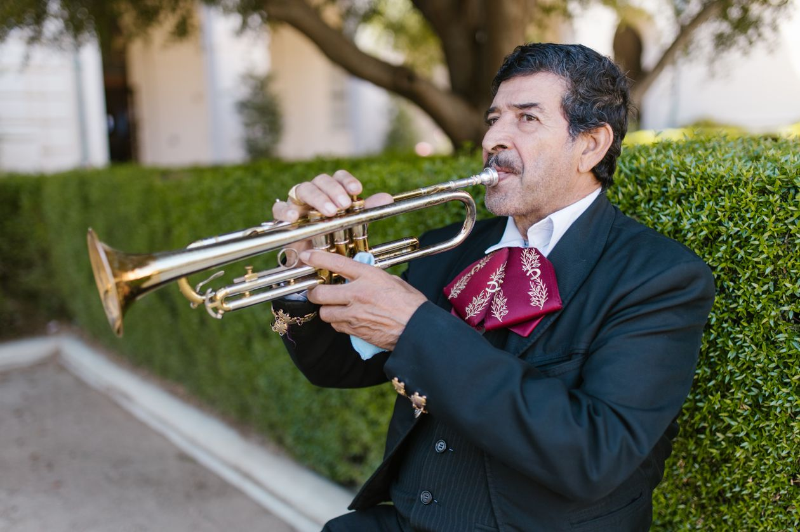
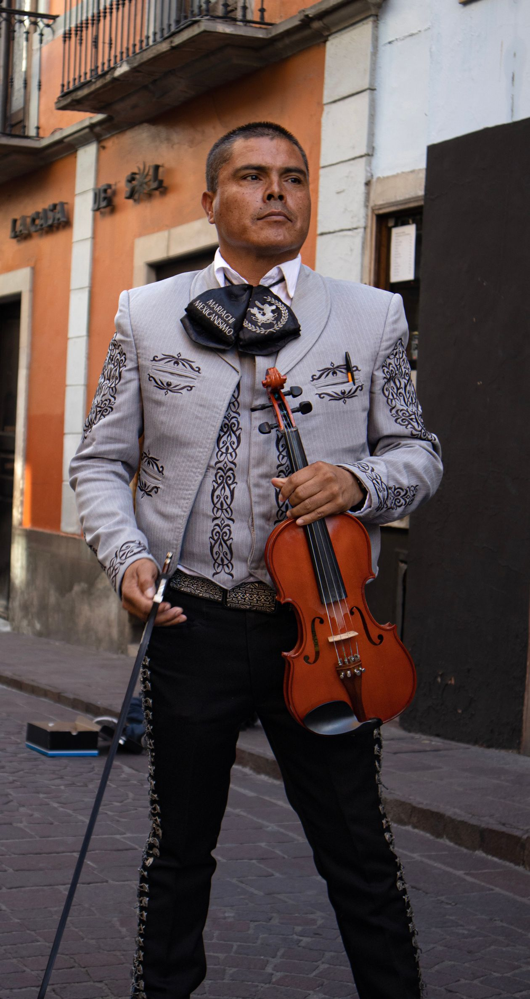

Learned in a school programme, kept honest by serenatas


Rafael Duarte started trumpet at twelve in a San Antonio school mariachi programme — the same route half the working players in Texas took, and still the best one: a borrowed horn, a traje that didn’t quite fit, and a director who treated a Saturday serenata like an exam. By sixteen he was playing weekend serenatas with older groups; by twenty-one he was leading them.
Mariachi Solano formed in 2009 from players who had come up through those school programmes together. The group has kept the same core ever since — two trumpets, three violins, vihuela, guitarra, guitarrón and harp — and the same rule Rafael’s school director enforced: the book is timed, the call is early, and the run-sheet goes out in writing. Restaurant residencies, school concerts and festival stages fill the calendar between the weddings and the 6 a.m. serenatas.
The group reads charts and plays by ear in roughly equal measure, and says so plainly: a new arrangement is read, rehearsed and then memorised — nothing reaches a client’s event still on the stand.
Press kit — short biography (41 words)
Mariachi Solano is a nine-piece, trumpet-led mariachi group from San Antonio, Texas, directed by Rafael Duarte. Formed in 2009, the group plays serenatas, weddings, quinceañeras and festival stages across South Texas — every song timed, every booking run from a written sheet.
Press kit — long biography
Mariachi Solano was founded in San Antonio in 2009 by trumpeter Rafael Duarte, a product of the city’s school mariachi programmes, and is built around players who learned the repertoire the same way — at dawn serenatas, in restaurant corners and on festival stages. The group works in three lineups, from a three-piece serenata trío to the full nine-piece ensemble with harp, and holds a book of 214 songs, each timed to the second. Standing work includes a Friday restaurant residency held since 2022, the Saturday wedding season across South Texas, and an annual headline set at the city’s Día de los Muertos festival. The group is known locally for two unfashionable habits: arriving forty-five minutes early, and sending the client a written run-sheet a week before the event.
Three sizes of the same group
The lineup is chosen for the room, not the fee — a trío at a door at dawn, the full group where the sound has to carry a hall.
| Lineup | Players | Instrumentation | Booked for |
|---|---|---|---|
| Trío | 3 | Trumpet, violin, guitarrón & guitar | Serenatas, proposals, small rooms |
| Grupo | 6 | 2 trumpets, 2 violins, vihuela, guitarra, guitarrón | Weddings, restaurants, parties |
| Full group | 9 | 2 trumpets, 3 violins, vihuela, guitarra, guitarrón, harp | Quinceañeras, festivals, large halls |
All lineups perform in full traje de charro with matching embroidery, and all play acoustically — no amplification is needed for rooms up to about 200 guests. For festival stages and halls above that, the group works with the venue’s PA and needs one soundcheck, which appears on the run-sheet.
How the group works, in writing
Call times & reliability
- 45 minutes early, always. The band is set up, tuned and in traje 45 minutes before the first scheduled note.
- Deputies are briefed, not strangers. Two deputy trumpeters and a deputy violinist hold the book and the run-sheets; if illness ever forces a change, the client is told before the event, not at it.
- A run-sheet a week ahead. Cue times, song order, entrances and the contact for the day — sent to the client, the planner and the venue.
- Weather plan for outdoor work. Instruments do not play in rain; a covered position is agreed on the sheet before the day.
Requests & booking terms
- Requests on the night are taken from the book of 214 — if it is in the book, it gets played.
- A song not in the book is a custom arrangement: $150, arranged and rehearsed, given 3 weeks’ notice.
- Deposit 30% holds the date; the balance is due on the day. Dates are not held without a deposit.
- Cancellation: full deposit refund at 60+ days, half at 30–59 days; inside 30 days the deposit is retained and can be moved once to a new date within a year.